.
OBSERWACJE PLANET I GWIAZD NA DZIENNYM NIEBIE
|
Astronomia w naturalny sposób kojarzy nam się z nocą, jednak jako pewna forma rozszerzenia, oraz wyzwania, istnieje możliwość uprawiania jej także w dzień. Pomijając tak oczywiste obiekty, jakim jest Słońce czy Księżyc na błękicie nieba, istnieje też możliwość polowania na Merkurego, Wenus, Marsa, Jowisza, Saturna oraz jaśniejsze gwiazdy. O ile dzienne obserwacje Księżyca, Jowisza, Saturna czy Marsa pozbawione są sensu z uwagi na o wiele niższy kontrast, to stają się sposobem samym w sobie na lepsze efekty w przypadku Wenus i Merkurego, a to z tego powodu, że one bytują blisko Słońca, co sprawia, że obcowanie z nimi na nocnym niebie jest niemożliwe, lub wymaga operowania na bardzo niskich wysokościach nad horyzontem, będąc zdanym na szkodliwy wpływ dyspersji atmosferycznej. Dlatego chcąc zapolować na Merkurego lub Wenus wysoko na niebie, jesteśmy zmuszeni czynić to w dzień, ale dzięki temu zabiegowi, w przeciwieństwie do pozostałych planet, uzyskamy efekt lepszy. Co by jednak nie mówić, widok białej tarczy Merkurego, czy Wenus, na błękicie dziennego nieba robi mistyczne wrażenie. Innym zagadnieniem jest polowanie na błękicie dziennego nieba na gwiazdy, dyscyplina stanowi wyzwanie same w sobie, efekty są gorsze niż podczas nocnych sesji, ale satysfakcja z dokonania nietypowego wyczynu, bo trafienie w gwiazdy w dzień na niebie jest wyczynem, jest wartością samą w sobie. Kliknij stosowną nazwę, aby zostać przeniesionym do interesującej Cię sekcji. . ➤ TECHNIKALIA ➤ MERKURY ➤ WENUS ➤ MARS ➤ JOWISZ ➤ KSIĘŻYC ➤ GWIAZDY . - TECHNIKALIA - NAMIERZANIE OBIEKTÓW . To, co na nocnym niebie nie stanowi wielkiego wyzwania, mianowicie, celowanie w obiekty, ponieważ z uwagi na wiele punktów odniesienia (jasne gwiazdy) jest dość proste, o tyle na otchłani błękitu dziennego nieba staje się prawdziwym wyzwaniem. O ile trafienie w Wenus, czy Jowisza, drastycznie trudne nie jest, o tyle upolowanie Merkurego, o gwiazdach nie wspominając, jest wymagające. Tu z pomocą przychodzi nam GoTo, jednak istnieje sposób manualny, którego mój opis znajdziecie TUTAJ. Gdy na nocnym niebie celujemy w gwiazdy, niejako przywołują one do siebie nasze spojrzenie swoim blaskiem, a inne gwiazdy otoczenia pozwalają nam łapać okiem odpowiednią ostrość. . 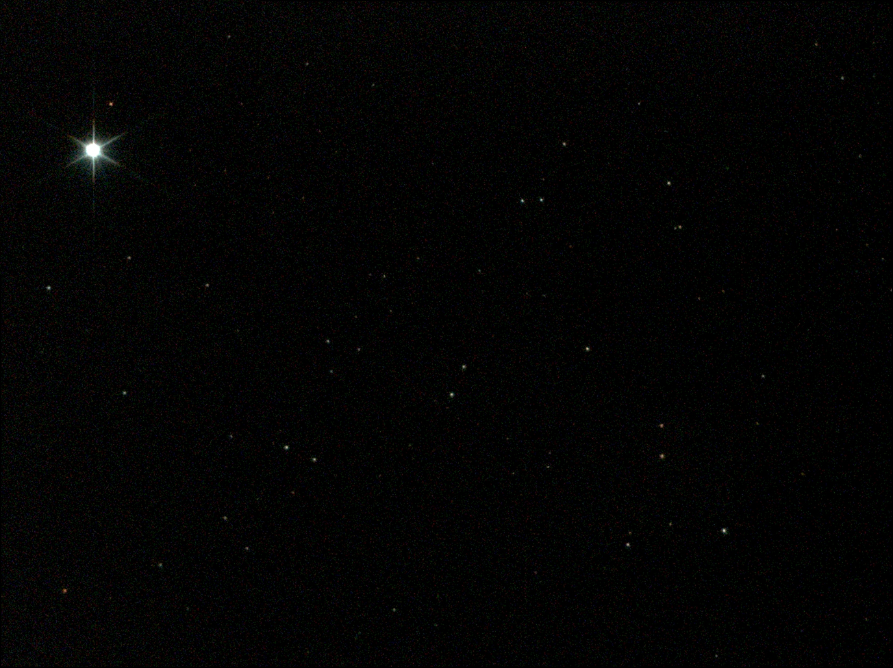 Inaczej ma się sytuacja, gdy na dziennym błękitnym niebie szukamy wzrokiem w polu okularu tarczy Merkurego, który często jest tak słaby, że sam z siebie nie przywoła naszego spojrzenia, a dodatkowo, bezkres błękitu bez jakichkolwiek innych obiektów powoduje, że nasze oko głupieje i nie wie, na jaką ostrość się ustawić. Zakres widzenia ostrego naszego oka to ok. 1-2° i jeśli szukając w polu widzenia okularu, tym polem widzenia, nie spojrzymy akurat dokładnie w to miejsce, gdzie znajduje się tarcza planety, możemy mieć ją cały czas przed nosem, ale jej nie dostrzegać. Poszukaj tarczy planety, zrozumiesz, z czym mamy do czynienia :) . 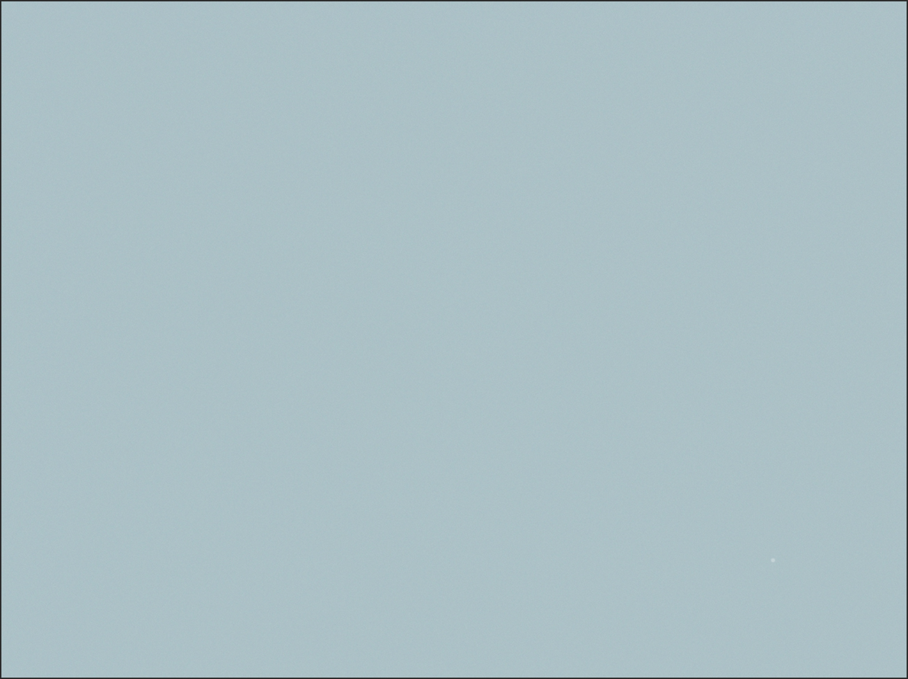 Inaczej jest np. z Wenus, która jest na tyle jasna, że swoim blaskiem, będąc nawet na obrzeżu pola widzenia okularu, nawet gdy szukamy na środku, przywoła nasze oko do siebie, migocząc do niego. . 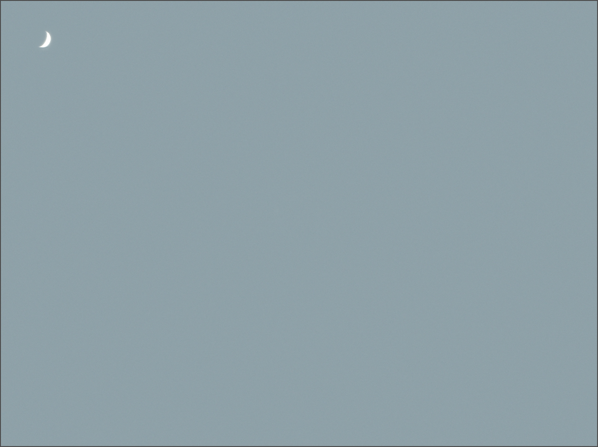 Wypatrzenie na błękicie nieba gwiazdy jest jeszcze trudniejsze i wymaga czasem zastosowania filtra kolorowego dla podniesienia kontrastu, aby już po ustawieniu obiektu idealnie na środku pola widzenia okularu, delektować się nim w naturalnych kolorach już bez jakichkolwiek udziwnień. Zakres ostrego widzenia naszego oka to ok. 1-2° i jeśli szukając w polu widzenia okularu, tym polem widzenia, nie spojrzymy akurat dokładnie w to miejsce, gdzie znajduje się gwiazda, możemy mieć ją cały czas przed nosem, ale jej nie dostrzegać. Na błękitnym tle poniżej jest jeden biały piksel, da się go wypatrzeć, ale zadanie to doskonale oddaje to, o czym piszę. Można patrzeć tuż obok i go nie widzieć, dostrzegamy go dopiero wtedy, gdy spojrzymy dokładnie na niego. Bardzo często dokładnie tak wygląda obserwacja gwiazd w dzień i czasami jest równie irytująca, jak szukanie tego piksela. :D Pomaga delikatne trącanie teleskopu, ponieważ dużo łatwiej jest wypatrzeć ruchomy obiekt. . Aktualne położenie planet najłatwiej i najszybciej można rozpoznać w niezawodnym Stellarium. Prowadzenie obserwacji, gdy niebo jest mętne od cirrusów, nawet bardzo słabych, w przypadku Merkurego i gwiazd jest mocno utrudnione, najlepszym wyborem są dni, gdy niebo jest kryształowe do samej tarczy Słońca. Przy ekstremalnych polowaniach (ciemny Merkury, słabe gwiazdy) można do sprawdzenia danego rejonu zaprząc kamerę astrofotograficzną, to czego ludzkie oko nie wyłapie, kamerka zrobi dużo sprawniej. Po ustaleniu, iż obiekt znajduje się na pozycji Ra 12h12m00s Dec +22°;20′00″ nastawiamy teleskop na Ra 12h13m00s obiekt teoretycznie przejdzie przez środek kadru za minutę, ale jeśli mamy jakieś niedokładności, to mamy zapas, i czeszemy Deklinację w przedziale +22°19′00″ +22°21′00″ góra-dół-góra-dół... OSTROŚĆ . Niebywale ważne jest też znać dokładne miejsce występowania ostrości każdego z używanych okularów, bo o ile Wenus to sobie możemy szukać nawet z częściowym brakiem ostrości, o tyle Merkurego czy gwiazd bez idealnie ustawionej ostrości nie wypatrzymy, a że na dziennym niebie nie ma gdzie jej ustawić no, chyba że na tarczy Słońca z folią Baader-a, o wiele prościej jest posiadać na tulei wyciągu stosowne oznaczenia, lub rozpiskę, na jaką wartość, do którego okularu wyciąg nastawiać. FILTRY . Kontrast w czasie obserwacji dziennych poprawiam stosując filtr IDAS LPS-D1, ponieważ pozwala zachować naturalną kolorystykę obrazu. OCIENIOWANIE . By ulepszyć dzienne obserwacje, stosuję mój autorski pomysł z parasolem ogrodowym. Parasol jest co chwilę przemieszczany za Słońcem, aby dać najbardziej optymalne warunki pracy teleskopu. . 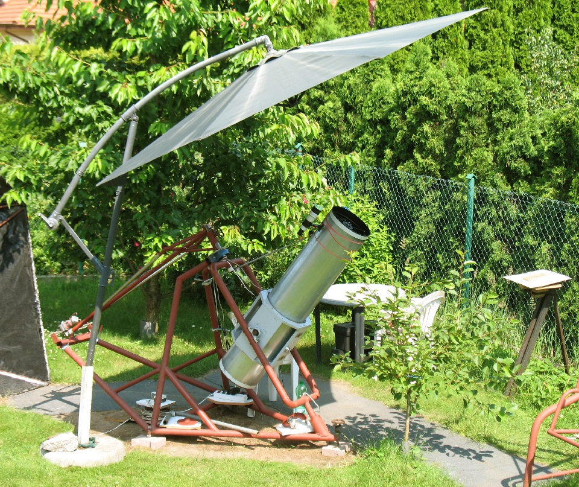 ODLEGŁOŚĆ OD TARCZY SŁOŃCA . Bardzo przydatnym narzędziem w Stellarium jest MIERNIK KĄTÓW, który znajdziecie w OKNO KONFIGURACJI | WTYCZKI | MIERNIK KĄTÓW i w OPCJE zaznacz ZAŁADUJ PRZY URUCHOMIENIU PROGRAMU, przy następnym uruchomieniu Stellarium na dole pojawi się właściwa ikonka. 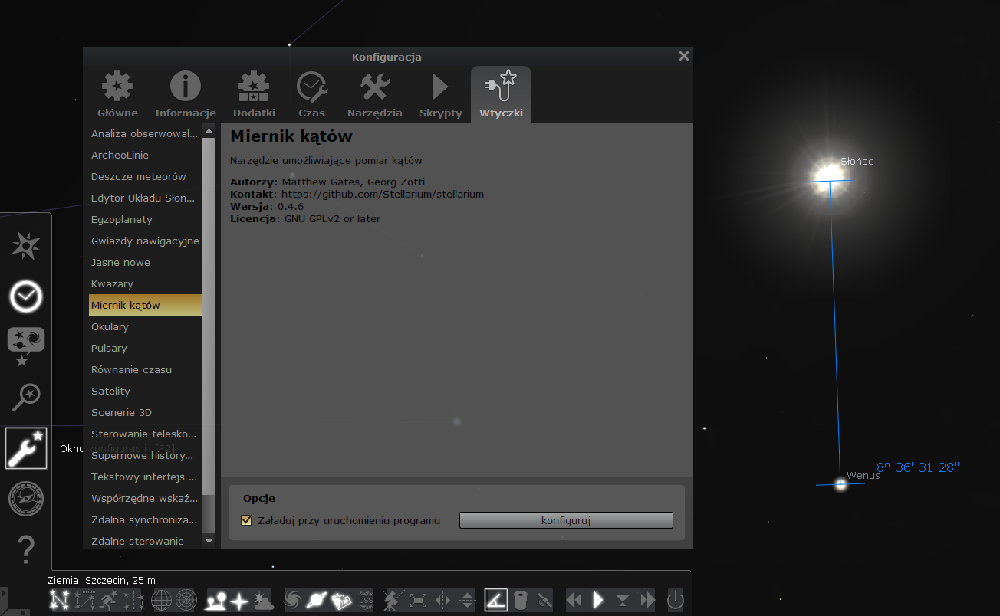 Miernik kątów pozwala zmierzyć odległość obserwowanego obiektu od tarczy Słońca, co ma kluczowe znaczenie dla oceny możliwości uchwycenia obiektu oraz zagrożenia, w przypadku obserwacji Merkurego i Wenus. | animacja GIF | 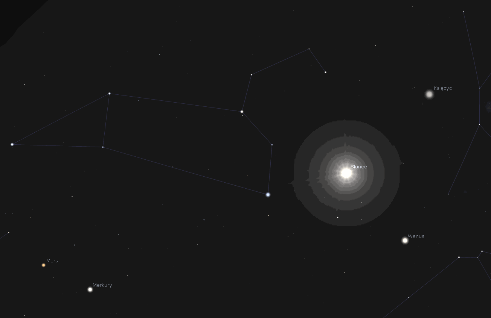 Z mojego doświadczenia, bezpieczne odległości zaczynają się od 15° i więcej, 10° już trzeba bardzo mocno uważać, a wszystko poniżej 10° to już zabawa dla bardzo doświadczonych operatorów. NATURA PLANET WEWNĘTRZNYCH . Planety wewnętrzne, Merkury i Wenus, "żyją" swoim specyficznym życiem, warto znać i rozumieć ich naturę. Rozmiar tarczy, faza, jasność, odległość od tarczy Słońca, każdy z tych aspektów ma znaczenie przy planowaniu sesji. Poniżej grafika prezentująca podstawowe zagadnienia i ich związek między sobą: faza, jasność, rozmiar tarczy, położenie względem Słońca. Jak widać, są znaczne różnice pomiędzy obiema planetami. Na chwilę odstawimy koniunkcje i elongacje, użyję słownictwa opisowego. Merkury - faza Merkurego pod względem oświetlenia tarczy najkorzystniej obserwować, gdy jest maksymalnie na prawo od tarczy Słońca i powoli się za nią chowa, lub gdy już wyjdzie z lewej strony na pewną odległość, aż do momentu, gdy oddali się maksymalnie na lewo. - jasność Merkurego pod względem jasności tarczy najkorzystniej obserwować, gdy jest maksymalnie na prawo od tarczy Słońca i powoli się za nią chowa, lub gdy już wyjdzie z lewej strony na pewną odległość, aż do momentu, gdy oddali się maksymalnie na lewo. - rozmiar tarczy Merkurego pod względem rozmiaru tarczy najkorzystniej obserwować, gdy jest maksymalnie na lewo od tarczy Słońca i powoli wchodzi przed nią, lub zejdzie z tarczy Słońca z prawej strony na pewną odległość aż do momentu, gdy oddali się maksymalnie na prawo. . 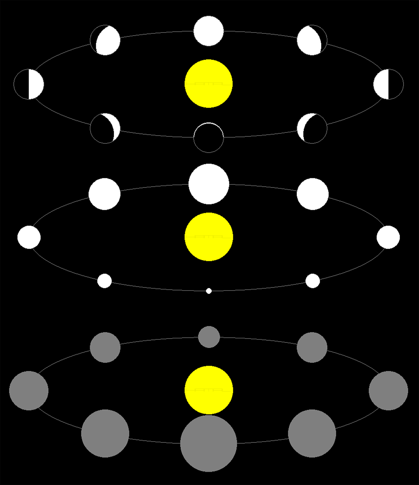 Wenus - faza Wenus pod względem oświetlenia tarczy najkorzystniej obserwować, gdy jest maksymalnie na prawo od tarczy Słońca i powoli się za nią chowa, lub gdy już wyjdzie z lewej strony na pewną odległość, aż do momentu, gdy oddali się maksymalnie na lewo. - jasność Wenus pod względem jasności tarczy najkorzystniej obserwować, gdy już wyjdzie z lewej strony tarczy Słońca na pewną odległość, gdy oddali się maksymalnie na lewo, aż do momentu, gdy zacznie się zbliżać do tarczy Słońca, wchodząc przed nią, i ponownie, gdy zejdzie z tarczy Słońca z prawej strony na pewną odległość, oddali się maksymalnie w prawo, do momentu, gdy zacznie wchodzić za tarczę Słońca po prawej stronie. - rozmiar tarczy Wenus pod względem rozmiaru tarczy najkorzystniej obserwować, gdy jest maksymalnie na lewo od tarczy Słońca i powoli wchodzi przed nią, lub gdy już wyjdzie z prawej strony na pewną odległość, aż do momentu, gdy oddali się maksymalnie na prawo. . 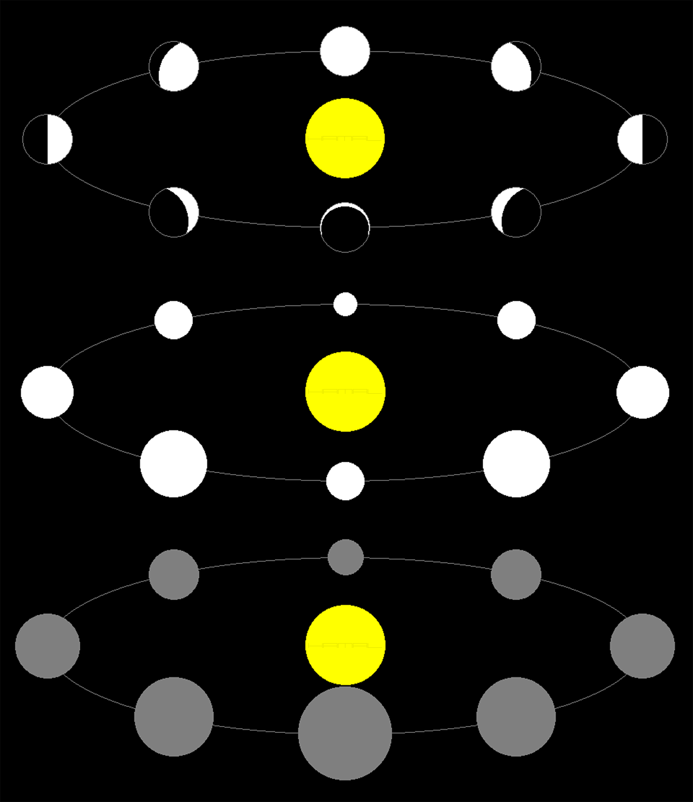 Jak widzicie, znając i rozumiejąc taniec obu planet i przyporządkowane temu zależności, wiadomo, kiedy szykować się na daną planetę, a kiedy jest okres niekorzystny. . PAMIĘTAJ !!!
. . NIGDY NIE KIERUJ TELESKOPU NIEPOSIADAJĄCEGO SPECJALNYCH FILTRÓW W STRONĘ LUB BEZPOŚREDNIE OTOCZENIE SŁOŃCA. WYSTARCZY UŁAMEK SEKUNDY, ABY ZEBRANE PRZEZ NIEGO ŚWIATŁO WYPALIŁO CI OKO !!! OBSERWUJĄC OBIEKTY BLISKO TARCZY SŁONECZNEJ TELESKOPEM BEZ FILTRÓW SŁONECZNYCH, ZACHOWAJ SZCZEGÓLNĄ OSTROŻNOŚĆ !!! NIGDY W OBSERWACJI TARCZY SŁONECZNEJ NIE STOSUJ FILTRÓW INSTALOWANYCH W OKULARACH OBSERWACYJNYCH, JEDYNYM SŁUSZNYM WYJŚCIEM JEST INSTALOWANIE FILTRÓW U WLOTU TUBUSU TELESKOPU LUB OBIEKTYWEM LUNETY!!! Aby oddać naturę opisanych tu obserwacji, prezentowane obrazowania są w małej skali, skupiają się na oddaniu wrażeń obserwatora, a nie pogoni za detalem obiektów, oraz posiadają jedynie nieznacznie podniesiony kontrast. PLANETY
.- MERKURY - Upolowanie Merkurego w dzień nie jest proste z uwagi na fakt, iż zazwyczaj znajduje się on bardzo blisko Słońca, jedynie w nielicznych przypadkach oddala się od niego znacznie, istnieje więc zagrożenie nieumyślnego skierowania teleskopu w tarczę Słońca i spalenie okularów, kamerki lub nie daj Boże, oka, więc polując w dzień na Merkurego, należy zachować wielką ostrożność. W jego przypadku, gdy jego jasność nie jest dostatecznie wysoka, może się zdarzyć, że nawet wprawny myśliwy będzie miał go w polu widzenia okularu, ale nie będzie w stanie go wypatrzeć. . Newton 305/1500 + ASI 224MC mod Mk II Zwiększając odrobinę kontrast, można liczyć na poniższe widoki. . 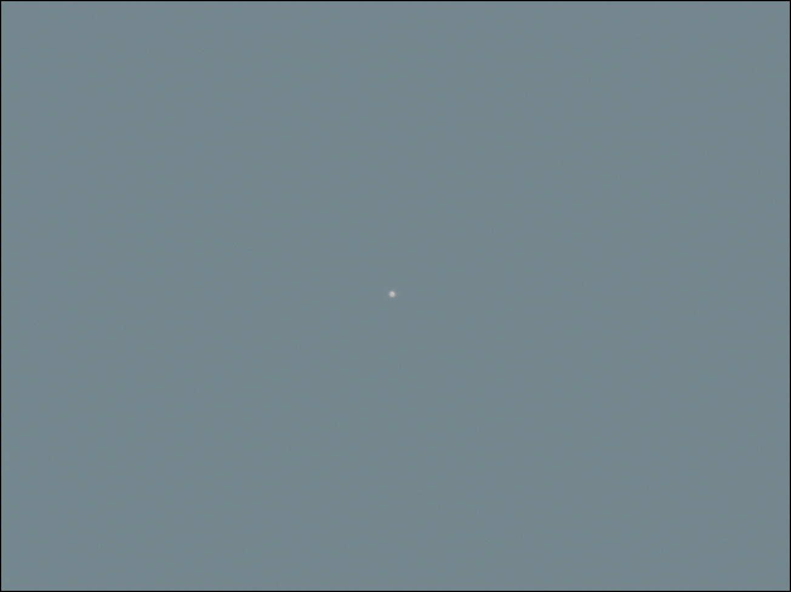 Newton 305/1500 + ASI 224MC mod Mk II Krótkie poglądowe Video - zalecana jakość 4K . Newton 305/1500 + ASI 224MC mod Mk II Często pierwszy kontakt z Merkurym w dzień wygląda następująco... ...gdzie on jest, przecież tu nic nie ma... . 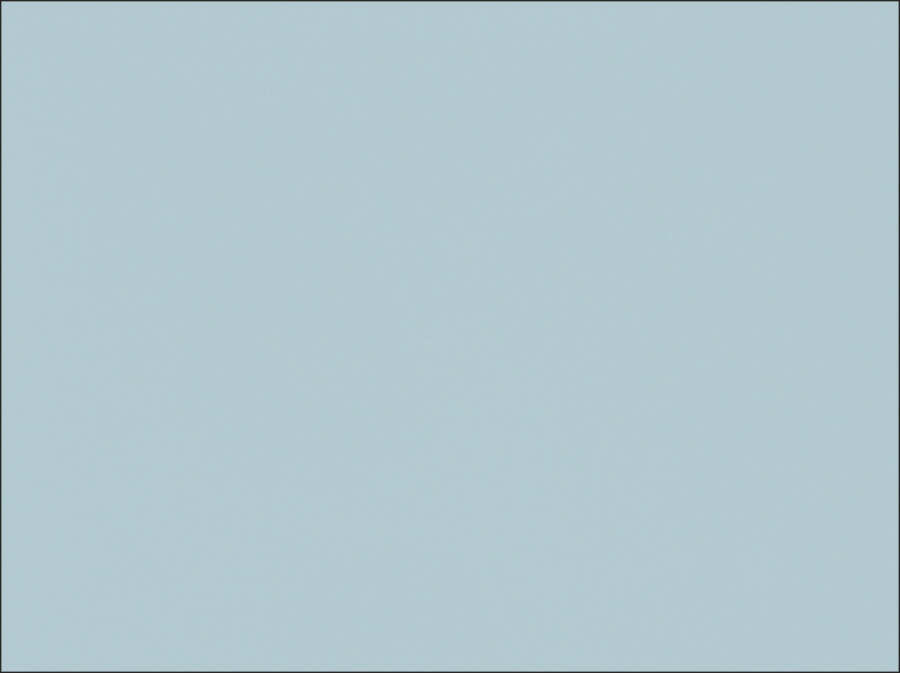 ...aaa, tu coś majaczy, cały czas był na środku... .  ...aby po oswojeniu się i nabyciu wprawy... . 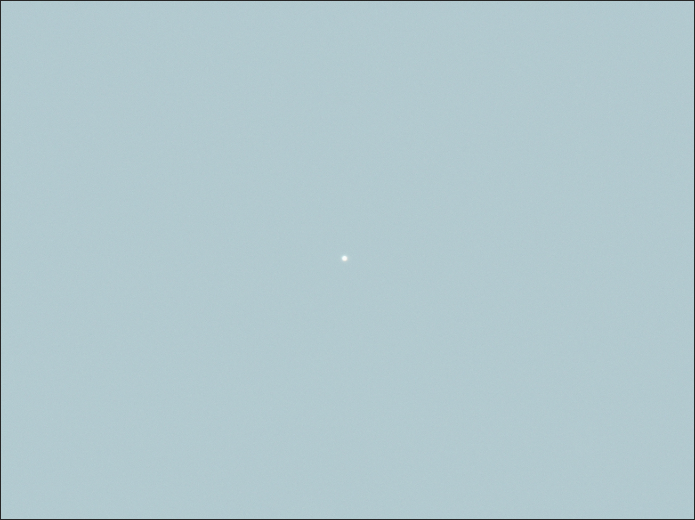 Newton 305/1500 + ASI 224MC mod Mk II Dużo zależy od samej jasności Merkurego, bo gdy jest on w niekorzystnej fazie i jest za ciemny, lub jest zbyt blisko Słońca, wypatrzenie go może się okazać niemożliwe. Poszukiwanie dogodnych okresów najlepiej poczynić za pomocą Stellarium. -WENUS- Wenus w dzień bywa tak jasna, że bez problemu da się ją wypatrzeć przez słabą lornetkę, a bywają i obserwatorzy twierdzący, że dali radę wypatrzeć ją nieuzbrojonym okiem. Tak czy inaczej, Wenus w teleskopie świeci tak jasno, że wystarczy, że mignie nam w okularze przy pobieżnym skanowaniu nieba, aby w te pędy do niej zawrócić. . 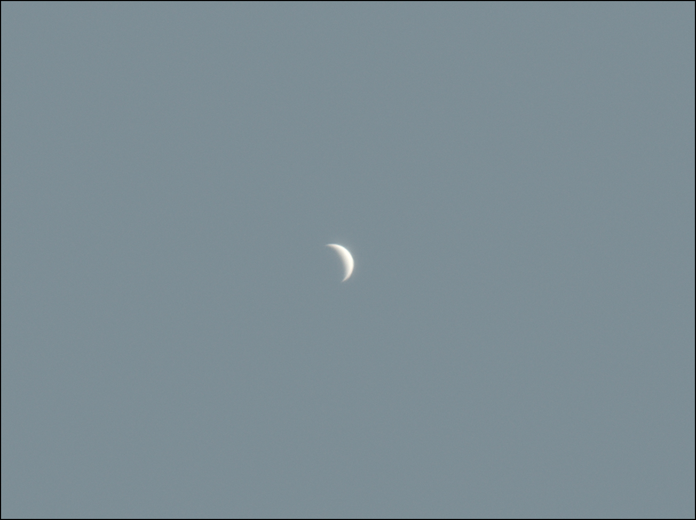 Newton 305/1500 + ASI 224MC mod Mk II Zwiększając odrobinę kontrast, można liczyć na poniższe widoki. . 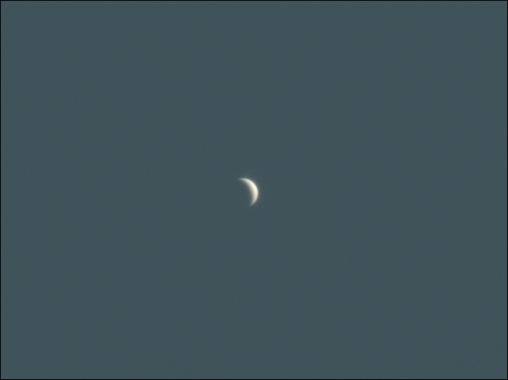 Newton 305/1500 + ASI 224MC mod Mk II Krótkie poglądowe Video - zalecana jakość 4K . Newton 305/1500 + ASI 224MC mod Mk II -MARS- Mars, Czerwona planeta :) Obserwacja tej planety w dzień to sztuka dla sztuki, bo skoro w opozycji możemy mieć go z super kontrastem wysoko na nocnym niebie z lepszym seeingiem niż dzienne falowanie nagrzanego powietrza... ale skoro da się, to spróbować można... Mars jest dość ciemny dla dziennego nieba, trzeba więc się skupić, aby wyłuskać go z tła. . 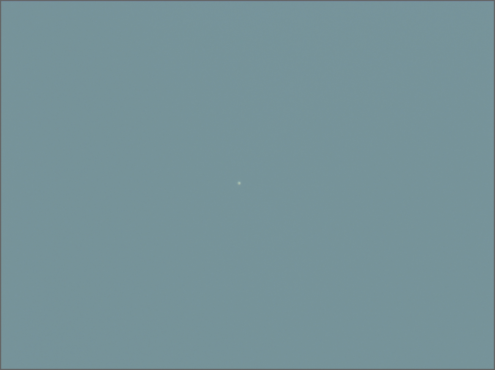 Newton 305/1500 + ASI 224MC mod Mk II Lepszy kontrast pozwala łatwiej rozpoznać Marsa. Małe jak Merkury, ale nie białe jak Merkury, to może być tylko Mars. . 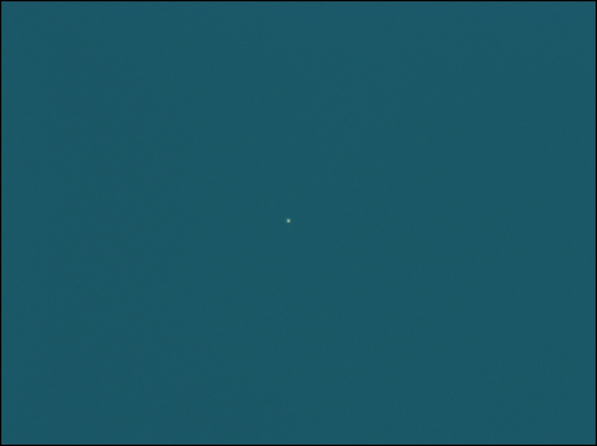 Newton 305/1500 + ASI 224MC mod Mk II Krótkie poglądowe Video - zalecana jakość 4K . Newton 305/1500 + ASI 224MC mod Mk II -JOWISZ- Jowisz, majestatyczny gigant :) Obserwacja tej planety w dzień to sztuka dla sztuki, bo skoro w opozycji możemy mieć go z super kontrastem wysoko na nocnym niebie z lepszym seeingiem niż dzienne falowanie nagrzanego powietrza... ale skoro da się, to spróbować można... Jowisz z uwagi na swoją jasność jest dość łatwym celem. . 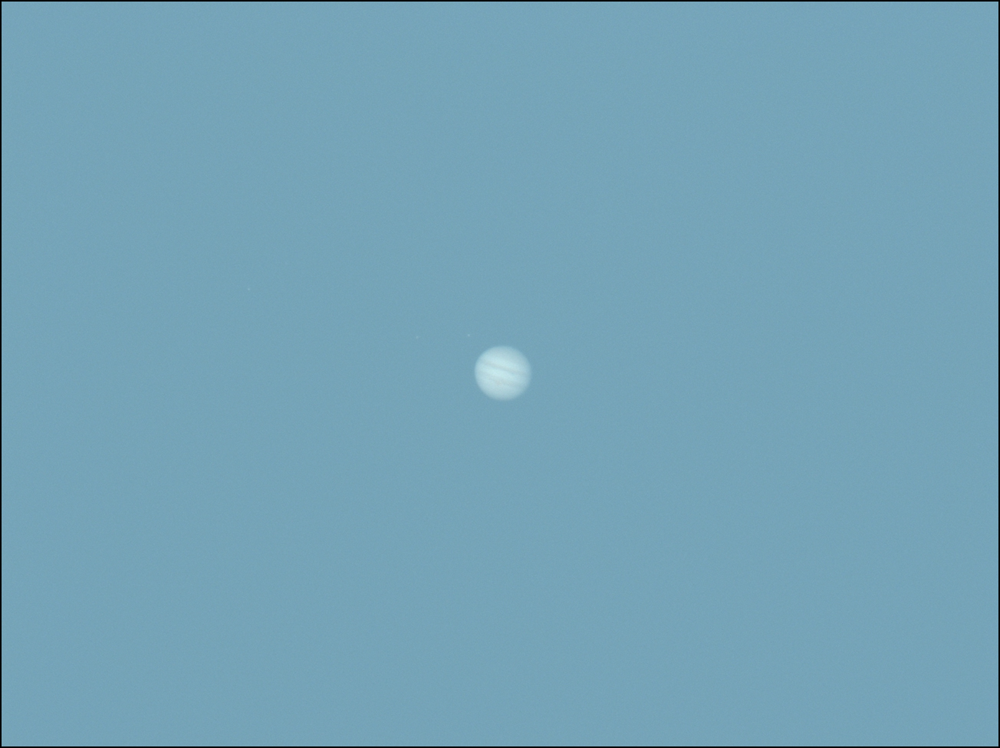 Newton 305/1500 + ASI 224MC mod Mk II Zwiększając odrobinę kontrast, można liczyć na poniższe widoki. . 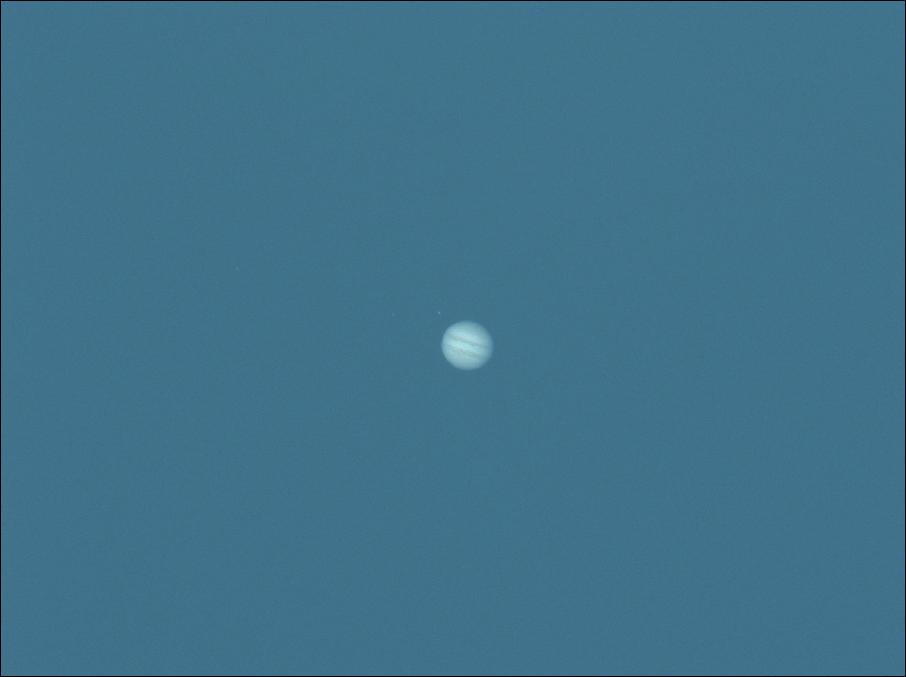 Newton 305/1500 + ASI 224MC mod Mk II Krótkie poglądowe Video - zalecana jakość 4K . Newton 305/1500 + ASI 224MC mod Mk II Przy obserwacjach cyfrowych za pomocą kamery mamy możliwość znacznego podniesienia kontrastu, aby lepiej uwydatnić z tła nieba księżyce Galileuszowe. . 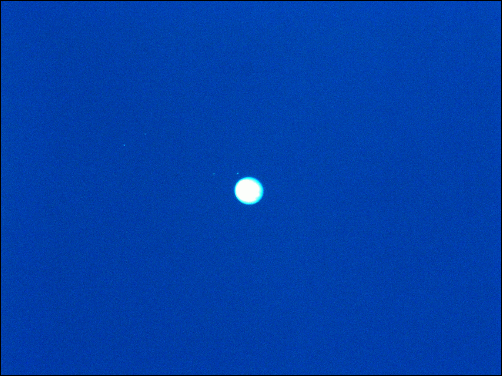 Newton 305/1500 + ASI 224MC mod Mk II Krótkie poglądowe Video - zalecana jakość 4K . Newton 305/1500 + ASI 224MC mod Mk II -KSIĘŻYC- Obserwacja Księżyca w dzień to sztuka dla sztuki, bo skoro możemy w nocy mieć go z super kontrastem i lepszym seeingiem to... ale skoro da się, oczywiście spróbować można... wygląda trochę inaczej. . 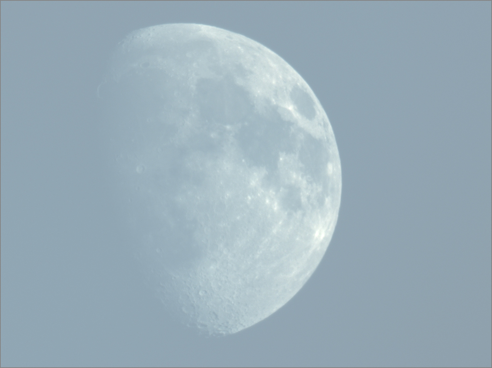 Newton Bresser Junior 76/350 Dobson + ASI 224MC mod Mk II Zwiększając kontrast, możemy liczyć na poniższe widoki. . 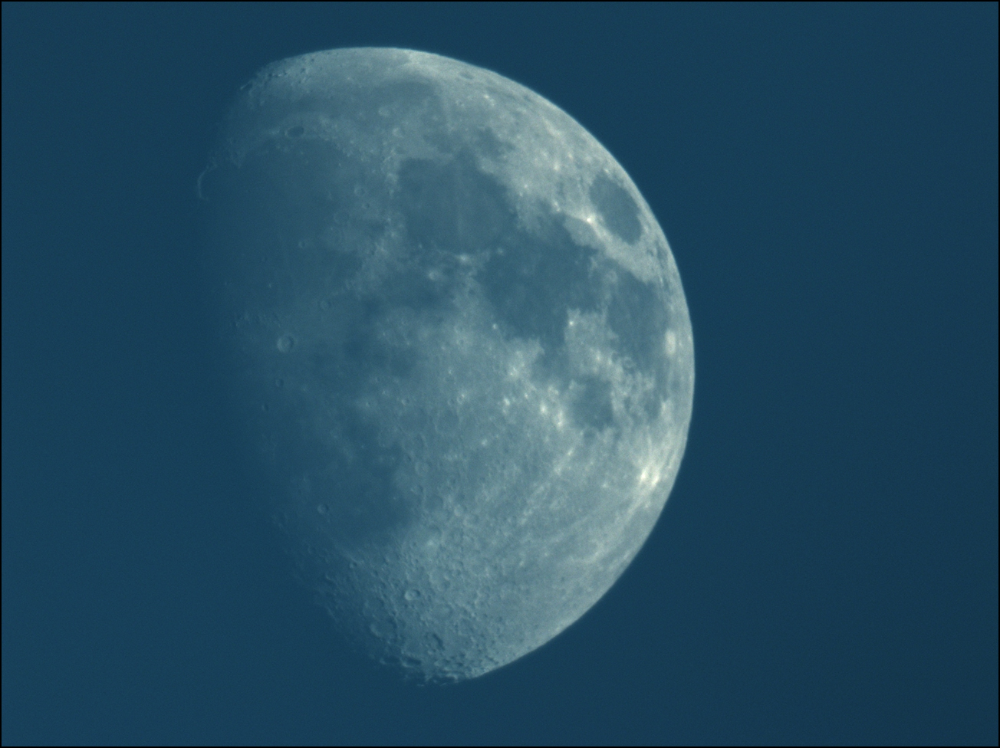 Newton Bresser Junior 76/350 Dobson + ASI 224MC mod Mk II Kratery księżycowe. . 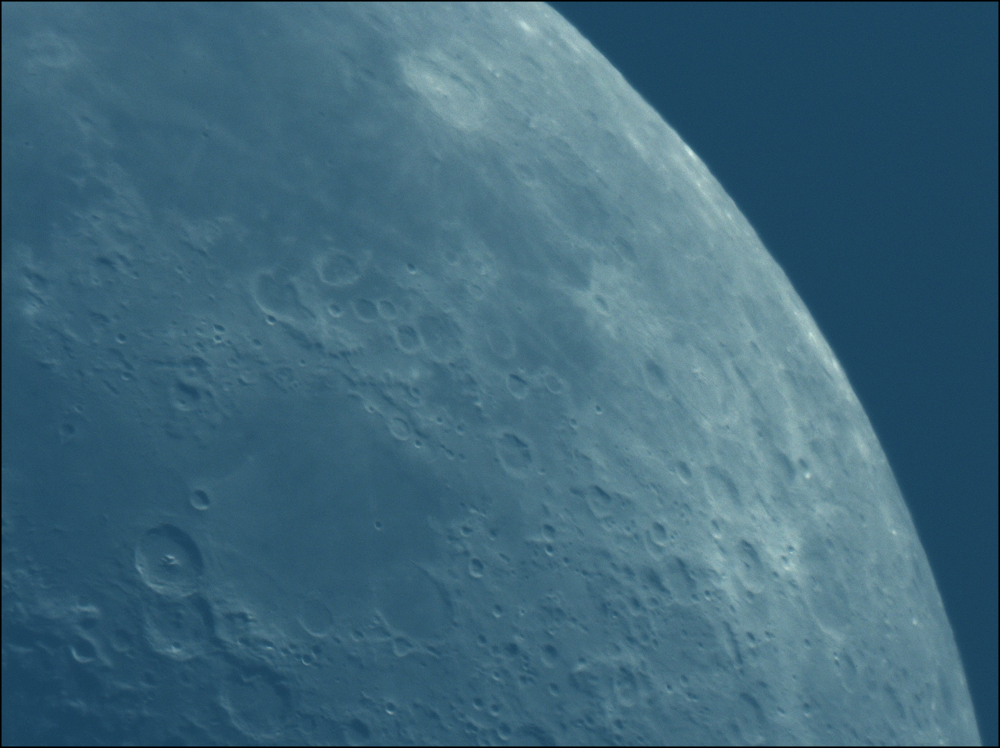 Newton 305/1500 + ASI 224MC mod Mk II Krótkie poglądowe Video - zalecana jakość 4K . Newton 305/1500 + ASI 224MC mod Mk II Kratery księżycowe. . 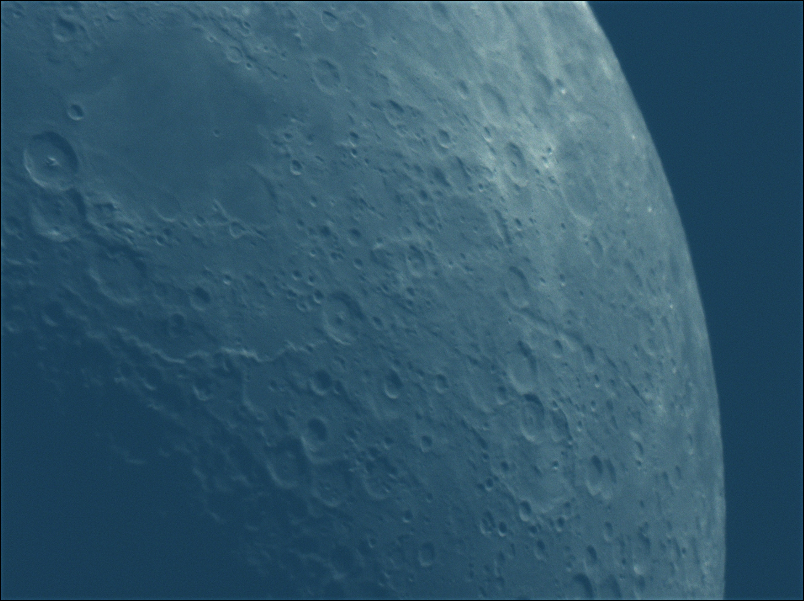 Newton 305/1500 + ASI 224MC mod Mk II Krótkie poglądowe Video - zalecana jakość 4K . Newton 305/1500 + ASI 224MC mod Mk II GWIAZDY
.Dzienna obserwacja gwiazd teoretycznie pozbawiona jest sensu, ale jak już pisałem na wstępie, polowanie na gwiazdy na błękicie dziennego nieba stanowi wyzwanie samo w sobie :) -KASTOR- Konstelacja Bliźniąt. . 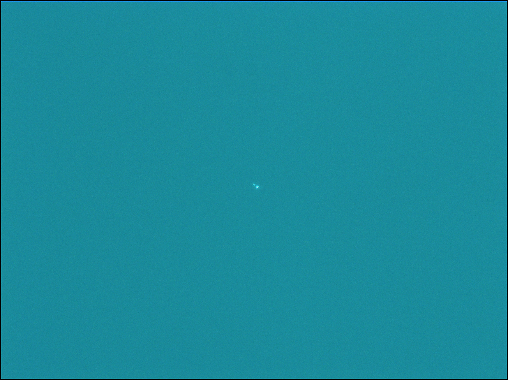 Newton 305/1500 + ASI 224MC mod Mk II Krótkie poglądowe Video - zalecana jakość 4K . Newton 305/1500 + ASI 224MC mod Mk II -POLLUKS- Konstelacja Bliźniąt. . 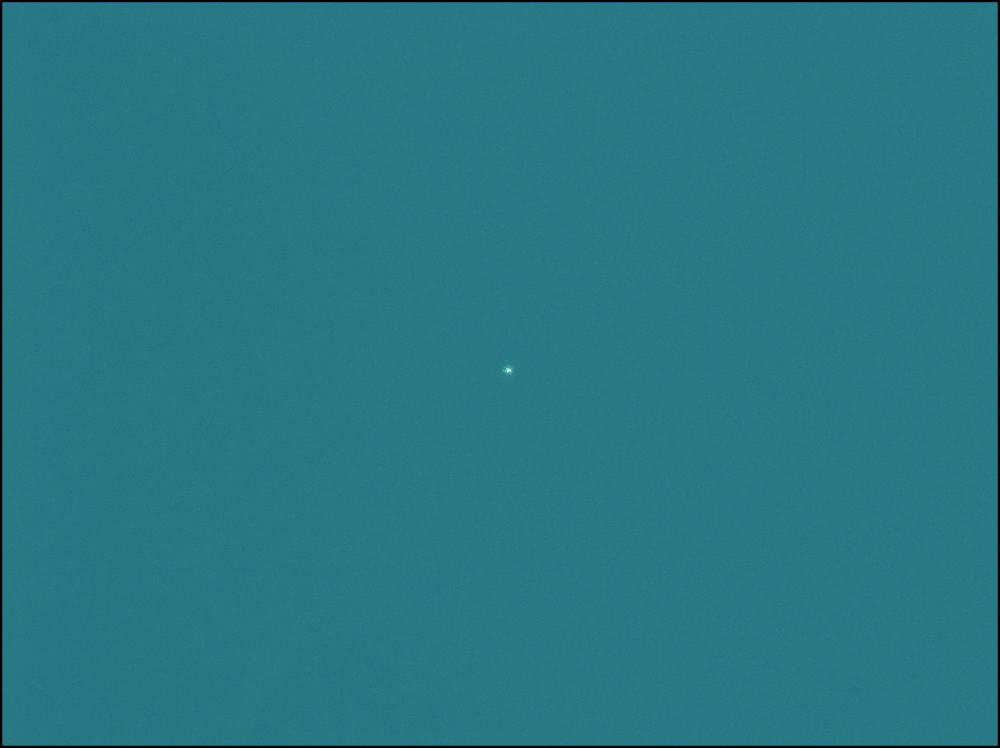 Newton 305/1500 + ASI 224MC mod Mk II Krótkie poglądowe Video - zalecana jakość 4K . Newton 305/1500 + ASI 224MC mod Mk II Podsumowując :) Da się, jest w tym sporo frajdy, należy jedynie uważać na Słońce, bo pół biedy, gdy spali się kamera czy okular, ale oczy mamy tylko jedne, pamiętajcie o tym!
MOGĄ CIĘ ZAINTERESOWAĆ RÓWNIEŻ


|